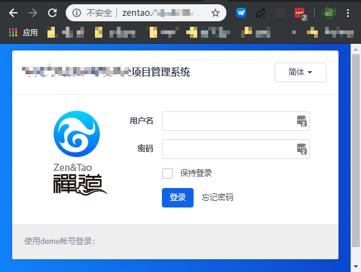

OpenShift企业测试环境应用部署实战
在 2019-05-20 Monday 发布于 DevOps 分类 • 4 min read
总览¶
今天领导交给我个小任务 - 把项目管理软件"禅道"开源版 部署到测试环境. 大概研究了下禅道开源版的官方文档, 决定通过Docker容器的方式把它部署到测试环境.
除去研究的时间, 实际上2小时就把禅道开源版部署到测试环境, 无需申请主机、存储、数据库、中间件和域名。真是丝般顺滑, 挺舒服的.
禅道简介¶
禅道1是专业的研发项目管理软件
- 细分需求、任务、缺陷和用例
- 完整覆盖研发项目核心流程
- 完整软件生命周期管理
实战步骤¶
概述¶
简单归纳起来, 就以下几步:
- 构建"禅道"开源版的Docker 镜像
- 在OpenShift上, 创建"禅道"项目, 并通过Docker 镜像创建"禅道"应用.
- 将"禅道"应用通过域名发布到企业内网.
当然, 由于OpenShift的安全增强, 以及企业测试环境的部分安全限制以及其他客观条件, 实际上执行起来需要的步骤更多:
- 构建"禅道"开源版的Docker 镜像
- 在云主机上, 通过Dockerfile 构建Docker镜像. 并导出
- 在企业OpenShift 测试环境上, 上传并导入Docker 镜像
- 在OpenShift上, 创建"禅道"项目, 并通过Docker 镜像创建"禅道"应用.
- 创建"禅道" - zentao 项目
- (可选) 指定该项目只能被调度到特定主机上;
- (可选) 创建OpenShift useroot 服务账户
- 创建"禅道" app 应用
- 持久化"禅道"应用和数据库数据.
- 创建"禅道" - zentao 项目
- 将"禅道"应用通过域名发布到企业内网.
- 创建"禅道" 服务(service)
- 创建"禅道" 路由(route)
- 添加DNS记录.
具体步骤¶
1-1 Dockerfile 构建镜像并导出
说明:
我是在我的云主机上构建的.
之所以选择云主机, 原因有2:
- 有网, 有Docker镜像下载加速;
- 已安装 Docker 组件和服务
- 创建
Dockerfile(可以直接通过官网下载连接下载),
FROM ubuntu:16.04
MAINTAINER yidong <yidong@cnezsoft.com>
RUN apt-get update && apt-get install -y apache2 mariadb-server php php-curl php-gd php-ldap php-mbstring php-mcrypt php-mysql php-xml php-zip php-cli php-json curl unzip libapache2-mod-php locales
ENV LANG="en_US.UTF8"
ENV MYSQL_ROOT_PASSWORD="123456"
RUN echo -e "LANG=\"en_US.UTF-8\"\nLANGUAGE=\"en_US:en\"" > /etc/default/locale && locale-gen en_US.UTF-8
RUN mkdir -p /app/zentaopms
COPY docker-entrypoint.sh /app
RUN random=`date +%s`; curl http://cdn.zentaopm.com/latest/zentao.zip?rand=$random -o /var/www/zentao.zip
RUN cd /var/www/ && unzip -q zentao.zip && rm zentao.zip
RUN a2enmod rewrite
RUN rm -rf /etc/apache2/sites-enabled/000-default.conf /var/lib/mysql/*
RUN sed -i '1i ServerName 127.0.0.1' /etc/apache2/apache2.conf
COPY config/apache.conf /etc/apache2/sites-enabled/000-default.conf
COPY config/ioncube_loader_lin_7.0.so /usr/lib/php/20151012/ioncube_loader_lin_7.0.so
COPY config/00-ioncube.ini /etc/php/7.0/apache2/conf.d/
COPY config/00-ioncube.ini /etc/php/7.0/cli/conf.d/
VOLUME /app/zentaopms /var/lib/mysql
ENTRYPOINT ["/app/docker-entrypoint.sh"]
- 此时, 该项目目录包含以下内容:
$ tree docker_zentao
docker_zentao
|-- config
| |-- 00-ioncube.ini
| |-- apache.conf
| `-- ioncube_loader_lin_7.0.so
|-- docker-entrypoint.sh
|-- Dockerfile
|-- docker_zentao.tar.gz
`-- README.md
1 directory, 7 files
- 使用
Dockerfile构建docker 镜像:
cd docker_zentao
docker build -t zentao .
- (可选) 可以运行一下以测试构建的镜像是否可以正常运行:
docker run --name zentao-test -p 8000:80 -e MYSQL_ROOT_PASSWORD=123456 -d zentao # 后台运行该docker容器
docker ps # 查看容器是否正常运行, 有无crash
docker stop zentao-test # 测试完毕, 停止该容器
- 将镜像导出为tar包.
docker save -o docker_zentao.tar zentao
1-2 上传并导入docker 镜像
为什么要通过tar包导入镜像?
因为企业的OpenShift测试环境不通外网, 但是有个测试内网的镜像仓库.
- 把镜像tar包, 上传到可以连接到OpenShift企业测试环境的任意节点(本例子通过sftp上传)
- 导入到企业测试环境的镜像仓库:
docker load -i docker_zentao.tar
docker push txocp-registry.example.com/ewhisper/zentao
2-1 创建"禅道" - zentao 项目
"项目"(project) 是OpenShift中的概念, project可以理解为对应K8S的
namespace. 通过这个实现了多租户的隔离.所以每启动一个新项目, 就应该在OpenShift上创建一个单独的项目.
(可选) 指定该项目只能被调度到特定主机上;
由于是测试环境, 为了方便配置, 会通过
HostPath(就是把文件持久化到本机的本地磁盘)来实现持久化. 那么就要保证"禅道"(zentao)这个项目的容器都要调度到一台指定的node(节点)服务器. 所以要通过下文的node-selector来实现该功能.
oc adm new-project zentao \
--node-selector='kubernetes.io/hostname=txocp.node02.example.com'
在上边的命令中, oc adm new-project zentao 就是创建一个新项目 - zentao.
--node-selector 就是通过node-selector 后边的条件来指定该项目如何调度.(应用场景是: 调度到高IO节点, 或者调度到上海区域...)
kubernetes.io/hostname=txocp.node02.example.com 前边的xxxhostname是条件, 即根据hostname 调度, 后边的是判定. 总的来说, 即该项目要被调度到:hostname为txocp.node02.example.com的节点. (该节点肯定只有一个).
2-1-1 创建OpenShift useroot 服务账户
之所以创建OpenShift 服务账户, 是因为 OpenShift 作为企业级容器平台, 进行了安全加固, 默认不允许容器以root 用户启动和运行. 所以要通过创建一个服务账户
useroot, 为此账户添加"允许容器以root启动和运行的"的权限, 并应用到"zentao" 项目. 以此来使得容器可以正常启动.
- 在zentao项目中, 创建 服务账户(serviceaccount) - useroot
oc create serviceaccount useroot
- 使用OpenShift集群管理员用户, 为
useroot赋予anyuid的权限:
oc adm policy add-scc-to-user anyuid -z useroot
- (可选) 如果已经启动过应用, 则通过
oc patch来更新应用的dc (部署配置)内容:
oc patch dc/zentao --patch '{"spec":{"template":{"spec":{"serviceAccountName": "useroot"}}}'
- 此后, 容器内就可以通过root运行.
2-2 创建"禅道" - zentao 应用
一个项目 中, 可以包括多个应用, 比如: 禅道web server, 禅道app server, 禅道缓存服务器, 禅道数据库...
本次为测试环境, 禅道的所有组件统统打进一个docker镜像里了, 所以就只有一个应用 - zentao. 里边其实就包括了禅道的: web server, app server和db.
oc new-app --name=zentao \
--docker-image=txocp-registry.example.com/ewhisper/zentao \
-e MYSQL_ROOT_PASSWORD=123456 \
--insecure-registry=true
上边的命令, 通过oc new-app来创建新应用. 通过--docker-image来指定镜像的地址, 通过--e xxx 来指定环境变量.
由于测试环境的registry没有配置https, 所以要添加--insecure-registy=true, 否则默认是通过https访问, 会找不到镜像.
运行命令后, OpenShift会默认创建:
- deployment configuration (dc, 部署配置) - zentao
- build configuration (bc, 构建配置)
- pod(容器)
- ...
可以通过oc get 后边跟 dc bc pod等来获取应用的创建和部署状态.
通过oc status 或者oc logs来查看相关事件和日志.
至此, 应用已经部署好了, 但是目前还存在2个问题:
- "禅道"的应用和数据库数据是临时性的, 还没有进行持久化;
- "禅道"只能通过docker内部访问, 用户无法访问.
后续来一一解决这2个问题. 首先解决数据没有持久化的问题.
2-3 持久化应用和数据库数据
OpenShift 是一个容器编排调度系统, 理论上来说一个pod在哪儿我们完全不知道, 所以OpenShift推荐的持久化方案是通过PV和PVC来实现的.
PV的具体实现可以是: NFS之类的公有存储, 而不应该是本地路径. (OpenShift默认不允许本地路径(即: hostPath)实现方式)
本例中, 为了避免一切不必要的资源申请流程(当前OpenShift测试环境没有现成的nfs这类公有存储), 所以就直接用本地路径来实现持久化. 但还是要强调, 这不是最佳实践, 不推荐这么做.
由于OpenShift不允许本地路径持久化, 所以首先要更改配置使其允许.
- 创建一个名为
hostpath的SCC (SCC可以简单的理解为安全限制策略). 先创建一个scc-hostpath.yaml
kind: SecurityContextConstraints
apiVersion: v1
metadata:
name: hostpath
allowPrivilegedContainer: true
runAsUser:
type: RunAsAny
seLinuxContext:
type: RunAsAny
- 通过yaml 创建SCC:
oc create -f scc-hostpath.yaml
- 把
allowHostDirVolumePlugin参数配给hostpath:
oc patch scc hostpath -p '{"allowHostDirVolumePlugin": true}'
- 把
hostpath这个SCC赋权给所有用户: (system:authenticated就是所有用户)
oc adm policy add-scc-to-group hostpath system:authenticated
至此, 所有用户就都可以挂载hostPath 卷了.
接下来, 就是要配置持久化了:
- 在对应的node节点, 创建对应的持久化目录, 如:
/data/mysql和/data/zentaopms(禅道 镜像, 包含了2个需要持久化的目录, 分别为:/var/lib/mysql和/app/zentaopms, 分别持久化到前边的2个目录) - 编辑创建 zentao app时自动生成的
dc配置,oc edit dc zentao, 修改完成后如下:
apiVersion: apps.openshift.io/v1
kind: DeploymentConfig
metadata:
annotations:
openshift.io/generated-by: OpenShiftNewApp
creationTimestamp: '2019-05-16T10:24:25Z'
labels:
app: zentao
name: zentao
namespace: zentao
resourceVersion: '12345678'
selfLink: /apis/apps.openshift.io/v1/namespaces/zentao/deploymentconfigs/zentao
uid: c7xxxxxd-77c4-11e9-xxxx-faxxxxxxxfa
spec:
replicas: 1
revisionHistoryLimit: 10
selector:
app: zentao
deploymentconfig: zentao
strategy:
activeDeadlineSeconds: 21600
resources: {}
rollingParams:
intervalSeconds: 1
maxSurge: 25%
maxUnavailable: 25%
timeoutSeconds: 600
updatePeriodSeconds: 1
type: Rolling
template:
metadata:
annotations:
openshift.io/generated-by: OpenShiftNewApp
creationTimestamp: null
labels:
app: zentao
deploymentconfig: zentao
spec:
containers:
- env:
- name: MYSQL_ROOT_PASSWORD
value: 123456
image: >-
txocp-registry.example.com/ewhisper/zentao@sha256:......
imagePullPolicy: Always
name: zentao
resources: {}
terminationMessagePath: /dev/termination-log
terminationMessagePolicy: File
volumeMounts:
- mountPath: /app/zentaopms
name: zentao-volume-1
- mountPath: /var/lib/mysql
name: zentao-volume-2
dnsPolicy: ClusterFirst
restartPolicy: Always
schedulerName: default-scheduler
securityContext: {}
serviceAccount: useroot
serviceAccountName: useroot
terminationGracePeriodSeconds: 30
volumes:
- hostPath:
path: /var/cuikaidong/zentao/zentaopms
type: ''
name: zentao-volume-1
- hostPath:
path: /var/cuikaidong/zentao/mysql
type: ''
name: zentao-volume-2
test: false
triggers:
- type: ConfigChange
- imageChangeParams:
automatic: true
containerNames:
- zentao
from:
kind: ImageStreamTag
name: 'zentao:latest'
namespace: zentao
lastTriggeredImage: >-
txocp-registry.example.com/ewhisper/zentao@sha256:......
type: ImageChange
status:
availableReplicas: 1
conditions:
- lastTransitionTime: '2019-05-16T10:26:16Z'
lastUpdateTime: '2019-05-16T10:26:16Z'
message: Deployment config has minimum availability.
status: 'True'
type: Available
- lastTransitionTime: '2019-05-16T11:54:24Z'
lastUpdateTime: '2019-05-16T11:54:26Z'
message: replication controller "zentao-5" successfully rolled out
reason: NewReplicationControllerAvailable
status: 'True'
type: Progressing
details:
causes:
- type: ConfigChange
message: config change
latestVersion: 5
observedGeneration: 6
readyReplicas: 1
replicas: 1
unavailableReplicas: 0
updatedReplicas: 1
不要被这个配置文件吓到, 其实这些都是自动生成的. 关键信息是如下:
volumeMounts:
- mountPath: /app/zentaopms
name: zentao-volume-1
- mountPath: /var/lib/mysql
name: zentao-volume-2
△ 即2个容器内的需要挂载的路径, 分别被自动命名为: zentao-volume-1和 zentao-volume-2.
对应的外部挂载, 原始情况是EmptyDir (即没有挂载), 容器重启了数据就没了. 具体如下:
volumes:
- emptyDir:
name: zentao-volume-1
- emptyDir:
name: zentao-volume-2
修改后如下:
volumes:
- hostPath:
path: /var/cuikaidong/zentao/zentaopms
type: ''
name: zentao-volume-1
- hostPath:
path: /var/cuikaidong/zentao/mysql
type: ''
name: zentao-volume-2
之后, pod会自动进行重启, 把对应的数据通过hostPath 挂载到本地目录来实现持久化.
3-1 创建"禅道" 服务(service)
服务(Service) 是OpenShift或K8S 的专有概念, 简单理解就是把pod内的指定接口暴露给OpenShift或K8S集群内部使用的一种方法. (比如把: mysql容器内的3306端口暴露到OpenShift SDN网络的 172.X.X.X:3306).
oc expose dc zentao --port=80
把 zentao 应用的http服务端口80 暴露给OpenShift集群内部. (会创建一个叫 zentao 的 svc)
3-2 创建"禅道" 路由(route)
路由 (route)是OpenShift的专有概念, 类似于K8S的Ingress, 作用都是把服务暴露给OpenShift之外的网络, 使得用户可以通过域名或其他方式访问到该应用. (如: 通过
zentao.apps.example.com访问到 "禅道" 项目管理工具首页)
oc expose svc zentao --hostname="zentao.apps.example.com"
通过上边的命令, 就创建了一条路由, 实现了通过zentao.apps.example.com 访问到 "禅道" 项目管理工具首页. (如果不加--hostname, 默认的hostname前缀为appname-projectname, 即"zentao-zentao")
3-3 添加DNS记录
由于我们企业的OpenShift 测试环境DNS 的客观情况. 无法实现泛解析, 所以还需要请相关专业组手动添加DNS记录. 办公电脑添加DNS测试域等操作.
做完这些操作后, 才能通过域名访问到禅道系统.
至此, 我们就可以通过域名访问 "禅道" 页面, 而我们使用的数据也会保留在指定的node节点上. 

总结¶
整体使用下来, 部分地方还存在使用不畅的情况, 可以继续优化提升使用体验, 大概总结一下:
- 内部镜像仓库镜像资源太匮乏. 导致构建镜像不太方便. 后续内部的镜像仓库可以从docker hub, 红帽官方定期拉取较为流行的镜像.
- 在OpenShift上, 多挂载一个或多个公有存储(如NFS, NAS, 对象存储等), 方便进行数据持久化
- 跟进一步, 希望OpenShift可以直接调用下一层数据存储的相关接口, 实现自动申请
- 应用通过域名发布出来, 还需要经过域控或F5或个人电脑进行进一步配置才能生效. 后续可以考虑:
- 配置某二级域名的泛解析, 实现相关域名的自动发布.
- 更进一步, 可以考虑OpenShift直接和F5深度整合, 将F5作为其router使用. (当前是: F5 -> HAProxy(router) )
-
https://www.zentao.net ↩